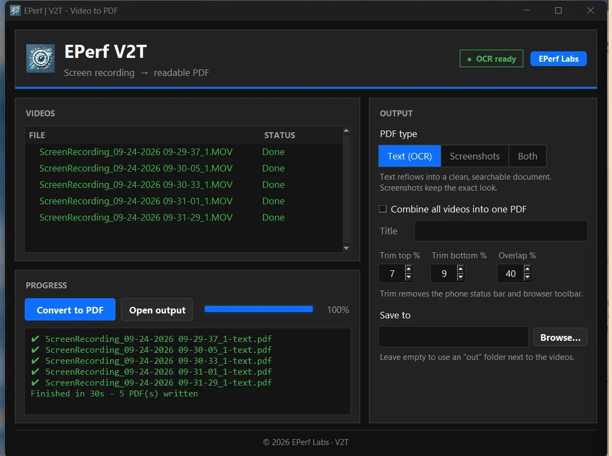

Turn screen recordings into clean PDFs
Record yourself scrolling through an article on your phone. V2T finds every screen of text, stitches it together and gives you a readable, searchable PDF, or a PDF of the screenshots themselves.
Download for Windows
Windows will warn you. That's expected.
V2T isn't code-signed yet (signing certificates cost money, and this is a free tool), so Windows and your browser don't recognize it. The warnings below are the normal ones for any new, unsigned app. It only takes a few clicks, and you only have to do it once.
- Keep the download. Your browser may say “V2T.exe isn't commonly downloaded”.
- Edge: hover the download, click … → Keep → Show more → Keep anyway.
- Chrome: in the downloads list click Keep (or Download suspicious file).
- Move it somewhere local, like your Desktop or Documents folder. Avoid running it from Google Drive, OneDrive or a network drive, because Windows adds an extra security prompt there that's easy to miss.
- Double-click V2T.exe. A blue “Windows protected your PC” box appears. Click More info, then Run anyway.
- Wait for it to open. A loading screen appears right away. The first start can take up to 30 seconds while the app unpacks. Don't double-click again; it will open on its own.
How to use it
Record
On your iPhone, start a screen recording and scroll steadily through the article. Copy the video to your PC.
Add
Drag the videos onto V2T, or click Add videos…. You can add a whole folder at once.
Convert
Pick Text, Screenshots or Both, then click Convert to PDF.
PDFs land in an out folder next to your videos.
Private and free
- Runs entirely on your PC. Your videos are never uploaded anywhere.
- Works offline. No account, no sign-up, no AI credits.
- Text recognition (Tesseract OCR) is built in. Nothing else to install.
Check the download (optional)
To confirm your copy is exactly the one published here, open PowerShell in the download folder and run
Get-FileHash .\V2T.exe. The result should match:
see downloads/latest.jsonTips & known limits
- Best with articles in light mode on a phone. Scroll smoothly, and pausing isn't needed.
- Text mode reads English. Tables and images come through in Screenshots mode, not as text.
- OCR isn't perfect. Expect the odd typo, like “Al” for “AI”.
- If your antivirus quarantines the file, that's a false alarm common to unsigned apps. Restore it or allow it.